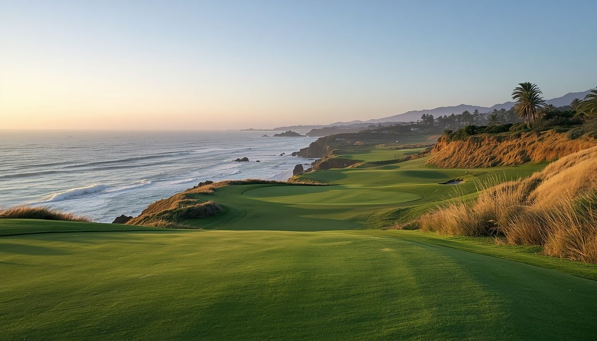
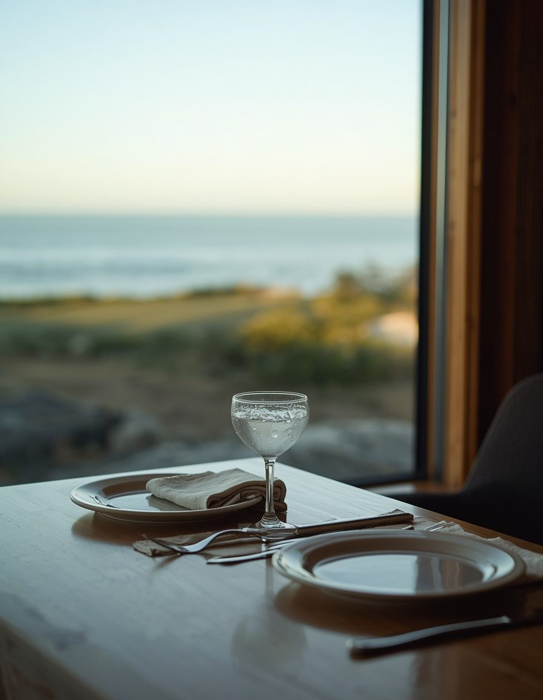

Weddings & celebrations
Ceremonies and receptions framed by the coast and the golf landscape.

Events at Ocean Bluff National
A public golf club on the California coast bluffs — and a setting for the days worth marking. Weddings and celebrations, company gatherings, and private dinners, with the ocean as the backdrop and the Grill in the kitchen.
The advantage here isn't a ballroom — it's the land: coastal bluff, open water, marine light, and evenings that end at sunset. Organizing competitive golf for a group? See Tournaments & outings →
Fictional demonstration property with sample content and reference imagery.
What we host
Ceremonies and receptions framed by the coast and the golf landscape.
Offsites, client events, dinners, and receptions with the ocean nearby.
Charity tournaments, company golf days, and group play across all eighteen holes — handled on the Tournaments & outings page →
The setting
Eighteen holes descend toward the Pacific, with marine light and open water shaping every gathering. The setting does not need to imitate a ballroom—the coastline is the venue.


Food & beverage
From tournament lunches to private dinners, food and beverage are prepared through the Grill and tailored to the occasion. From the first arrival to dinner at sunset, each event is planned around the property and the occasion.